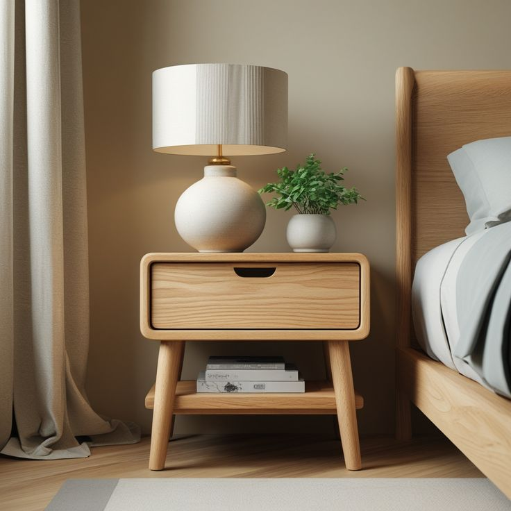
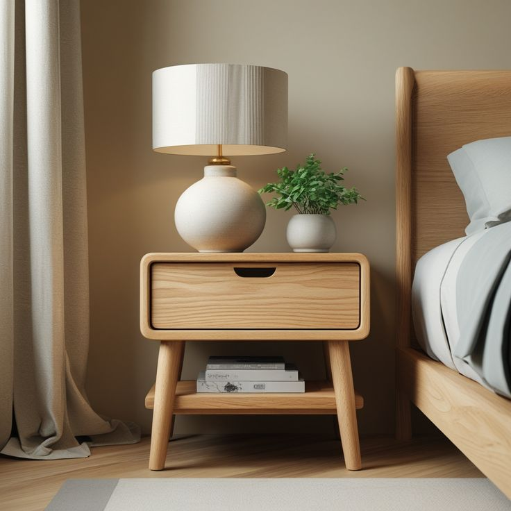

Overview
Royaloak is one of India’s leading furniture brands and retailers, offering a wide range of stylish and high-quality home and office furniture sourced from global designs and delivered through a large omnichannel network of online and offline stores, with a focus on elevating everyday lifestyles.
 

Industry
Furniture & Home Furnishings
Type
B2C
Timeline
5 months
Performance
(1st July 2025 – 31st Oct) VS (28th Feb 2025 – 30th June 2025)
Clicks Improvement
0%
Impressions Improvement
0%
Click through rate Improvement
0%
Ranking Improvement
0%
Approach
Conducted a comprehensive SEO and website audit for Royaloak, focusing on optimizing category and product pages for high-intent furniture and home décor keywords. Improved metadata, internal linking, and site structure, addressed technical SEO issues affecting crawlability and page performance, and supported content optimization to strengthen visibility across competitive furniture-related search queries.
Outcome
Enhanced organic visibility and keyword rankings across major furniture and home furnishing categories, leading to improved website traffic and engagement. Strengthened Royaloak’s digital presence in a highly competitive retail space and supported consistent growth in discovery, product page performance, and overall site health.